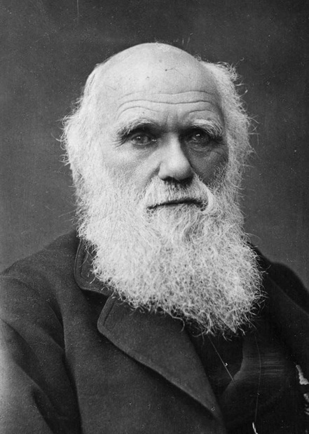
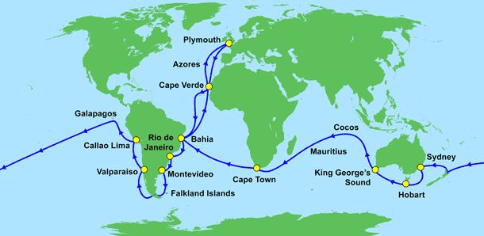
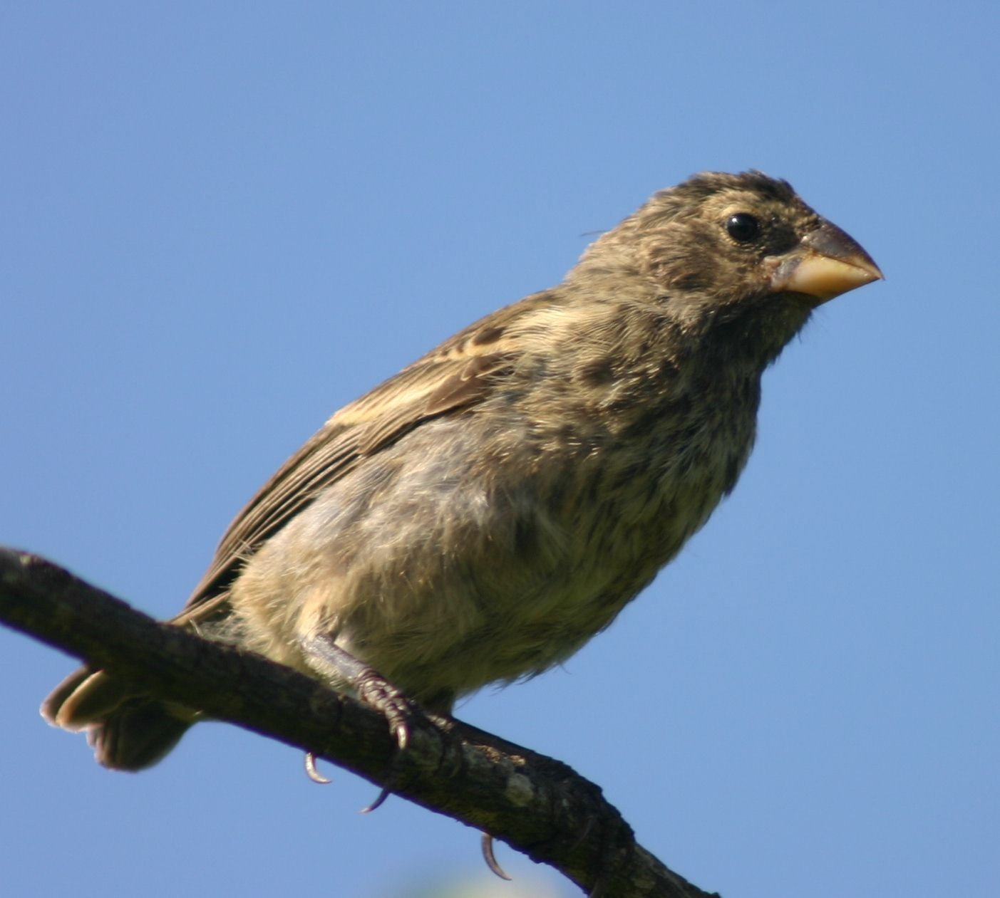
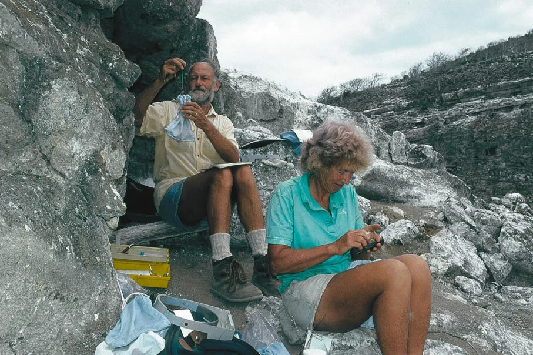
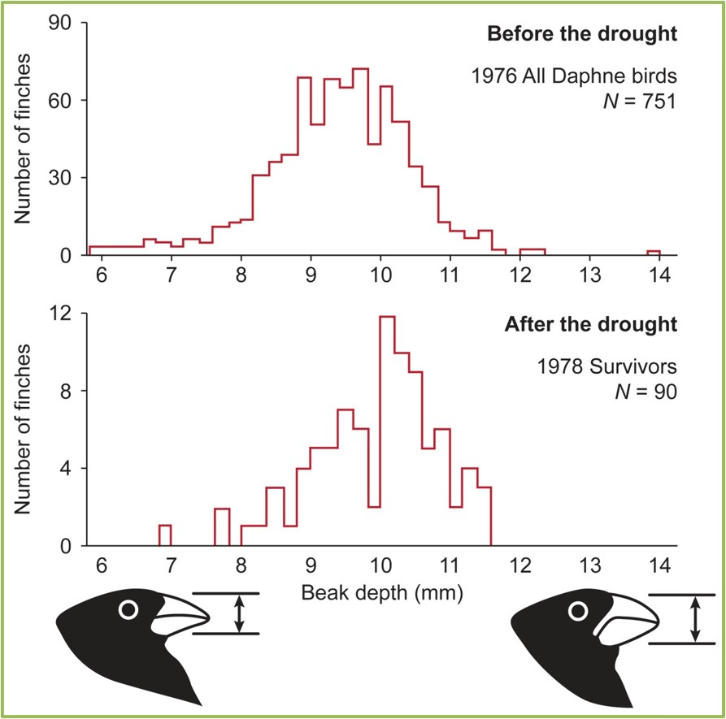

From Darwin's Finches to Quantum Cosmology
Science often begins with a difference so small that almost no one knows what to do with it.
A slightly deeper beak. A slightly harder seed. A population that looks almost the same before and after, until someone measures carefully enough to see that the balance has shifted.
The great changes in nature do not always announce themselves as revolutions. Sometimes they begin as small variations, waiting for the world around them to change.

In the 1830s, a young naturalist travelled around the world aboard HMS Beagle. The voyage was long, uncomfortable, and transformative. It carried him across oceans, along coastlines, through unfamiliar landscapes, and finally to the Galápagos Islands: a scattered volcanic world far out in the Pacific.

The islands were not impressive in the usual sense. They were dry, harsh, and isolated. But they held a quiet puzzle. Animals on one island resembled those on another, yet they were not quite the same. The differences were not dramatic. They were not the kind of differences one would build a theory around immediately. They were slight, local, almost humble.
Among the collected birds were finches. Some had thick beaks. Some had slender ones. Some seemed suited to cracking hard seeds, others to probing flowers or finding insects. At first, these differences were observations, not yet explanations. They were facts waiting for a principle.

A beak is an ordinary thing. It is not a manifesto. It does not announce a theory. It is simply the tool by which a bird meets the world.
But the world is not constant. Rain comes or fails. Seeds soften or harden. Food becomes plentiful or scarce. A trait that once made little difference can suddenly become the difference between survival and death.
This was the deep idea behind natural selection. Nature does not need to redesign organisms in response to crisis. Variation is already there. The crisis changes which variations count.
Before a drought, two birds with slightly different beaks may live almost the same life. After a drought, those same two beaks may face a different world. One bird can crack the remaining hard seeds. The other cannot. The difference was present all along, but the environment gave it reach.
For a long time, natural selection was a grand historical explanation. It made sense of the diversity of life, but it seemed too slow, too vast, too hidden to be caught directly. Evolution belonged to deep time.
Then, on a small island in the Galápagos, Peter and Rosemary Grant began measuring finches with extraordinary patience. They did not merely watch birds. They weighed them, measured them, followed them, recorded them generation after generation. The work was exacting and physical. It happened under sun, wind, dust, and heat.

In 1977, drought struck Daphne Major. Rain failed. Many of the small, soft seeds disappeared. The island did not become a different planet, but for the finches it became a different test.
The birds had not changed overnight. Their beaks had not been redesigned. What changed was the food left to them. The remaining seeds were harder, and birds with deeper, stronger beaks were more likely to survive.
The Grants measured the population before the drought and after it. The result was clear. The surviving birds had, on average, deeper beaks than the earlier population. Natural selection had not merely been inferred from the distant past. It had been observed in the present.

The lesson is not simply that birds differ. They always did. The lesson is that some differences become important only after a process acts on them.
A catalogue of traits is not yet an explanation. A list of possible beak shapes does not tell us which birds will survive. For that, we need to know how the environment transforms variation into outcome.
The same population can be placed under different conditions. A mild drought may preserve one pattern of survivors. A severe drought may produce another. Two descriptions of the same environment may differ only slightly, yet their difference may or may not survive into the population that remains.
| Before selection | After selection |
|---|---|
| Many small differences exist in the population. | Some differences become visible in survival. |
| Beak variation may seem minor. | Beak variation can become decisive. |
| The population contains possibilities. | The environment filters those possibilities. |
This is why the finch story is more than an example from biology. It teaches a general lesson about comparison.
Imagine two descriptions of the drought. In one, only the hardest seeds remain. In another, some softer seeds remain as well. Written down, the two descriptions are different. But do they produce different survivors?
If nearly the same birds live under both descriptions, then the difference between the descriptions has little practical effect. The world has erased most of the distinction. The two descriptions are formally different, but their consequences are nearly the same.
If different birds survive, then the distinction has reached the outcome. An observer looking at the surviving population could, in principle, learn something about which description was closer to the truth.
This is the beginning of the idea called Reach.
In the finch case, the process is natural selection. The system is a bird population. The visible result is the distribution of traits among the survivors.
A difference in drought descriptions matters only if it becomes a difference in the surviving population.
These essays use the finch story as a guide, not because cosmology is biology, but because both ask a similar structural question.
In biology, many traits exist in a population. The environment determines which traits count.
In quantum cosmology, many possible branch histories may exist in the theory. A conditioning rule determines how those branches count when probabilities are assigned.
The analogy is not perfect, and it should not be forced. Finches are living organisms in an environment. Branches of the universe are mathematical and physical alternatives in a quantum theory. But the shared question is sharp:
The next essay moves from birds to branches, from droughts to conditioning proposals, and from survival to probability. The question remains the same in spirit:
not merely what differences exist, but which differences matter.